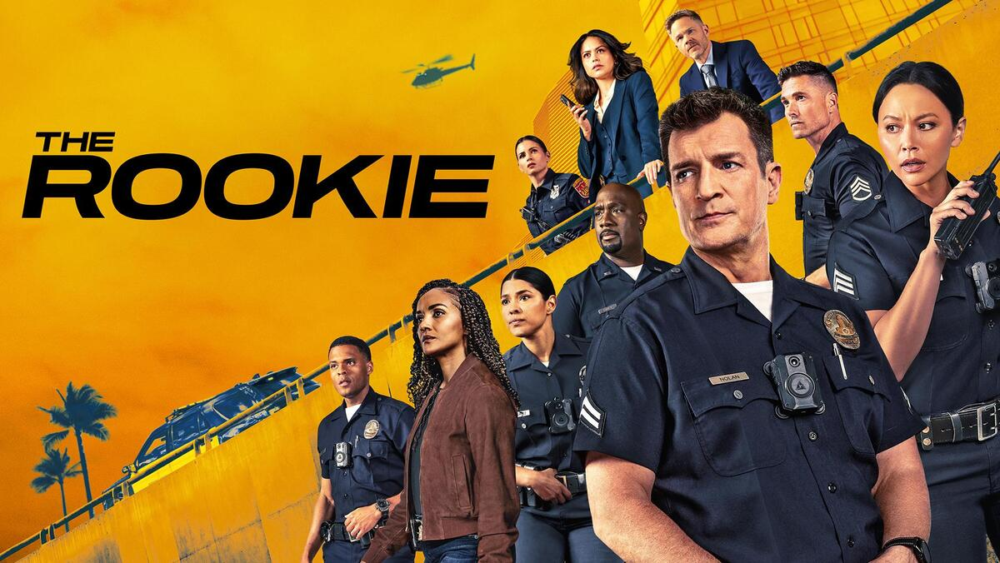

Sobre a série
The Rookie é uma série de televisão norte-americana de ação e drama policial, estreada em 2018 na ABC. Acompanha John Nolan, interpretado por Nathan Fillion, que aos 40 anos decide recomeçar a vida e tornar-se o agente mais velho da esquadra em início de carreira no Departamento de Polícia de Los Angeles.
Mistura ação, humor e momentos emocionantes, mostrando como é difícil ser novato numa profissão onde cada decisão conta.

Porque vale a pena ver
- Personagens carismáticas e com muita evolução ao longo das temporadas
- Equilíbrio entre episódios de ação e momentos de humor
- Uma história sobre recomeçar e nunca desistir dos sonhos
Queres saber mais? Vê a página da série no IMDb